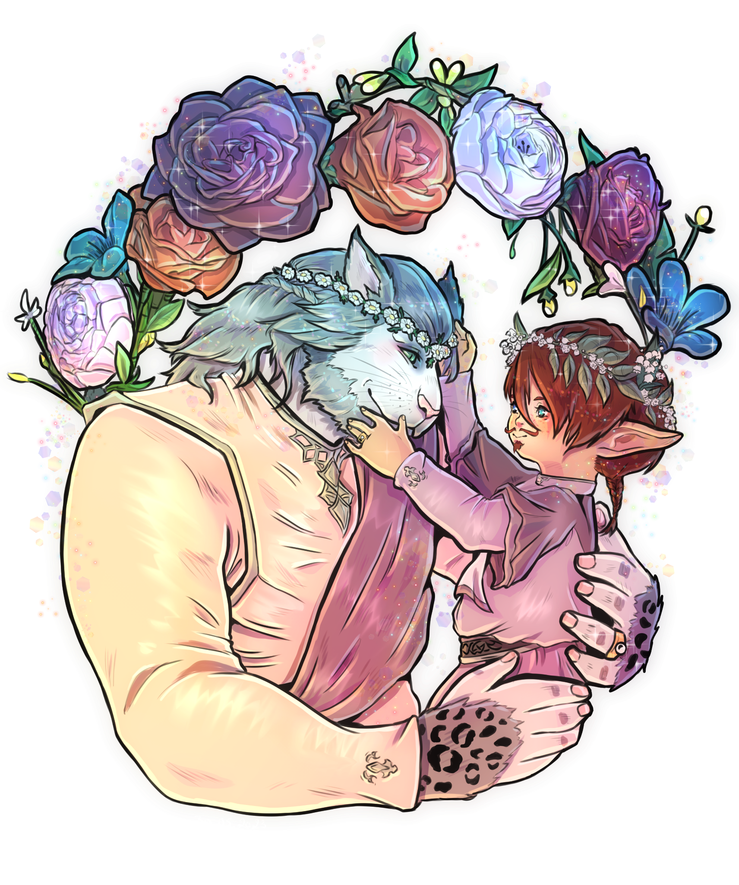
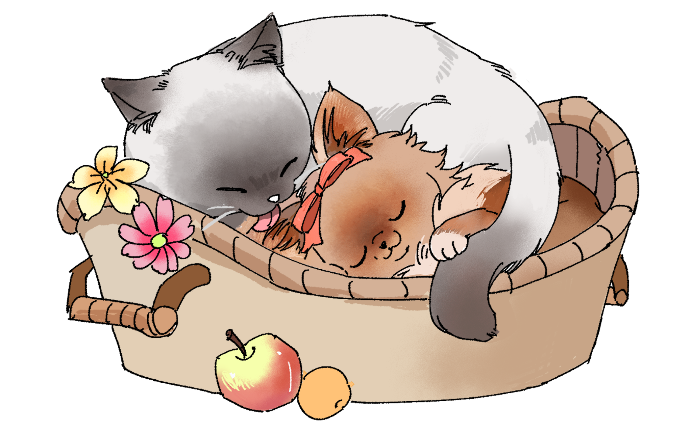

Salon de thé
Un petit coin de douceur au cœur de Lavendière.
Le Chasha’Miam est un petit salon de thé qui vous accueillera avec calme, sérénité et candeur. Tenu par Iadreï Minousch et son compagnon, Shasharine Dodorine, l’établissement est une porte ouverte dans la candeur et la tendresse que le duo a à offrir.
Ragnarok — Lavendière
27e secteur, parcelle 22


Horaires
Une petite faim ? Passez nous voir.
Le Chasha’Miam vous accueille tous les jours, à l’exception du premier jour de la semaine, de 11 h à 19 h.
Sharlène et Jajariku sont là pour vous accueillir, prendre vos commandes et veiller à ce que vous ne manquiez de rien. Quant aux gérants, vous pourrez les croiser au gré de leurs passages au salon.